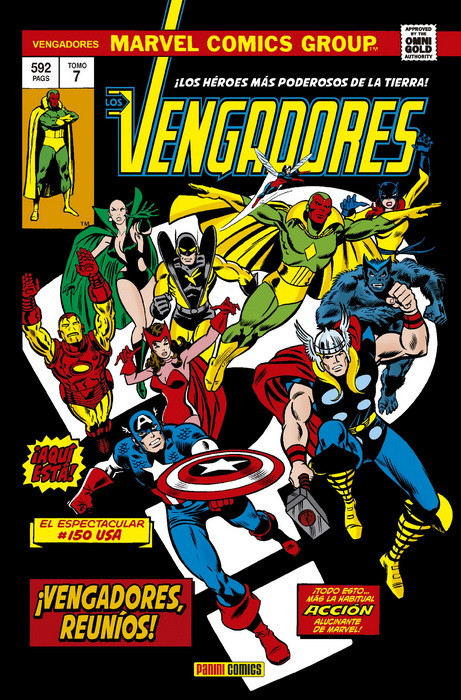
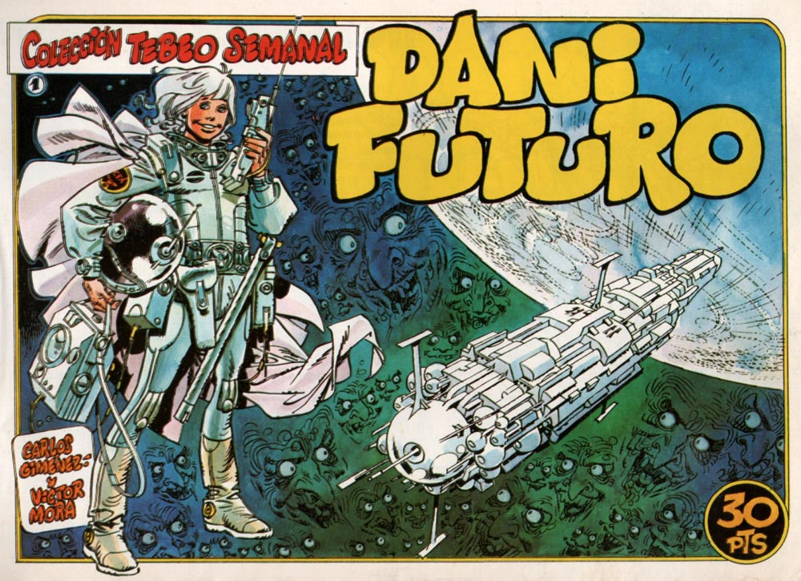

<!DOCTYPE html>
<html lang="es">
<head>
    <meta charset="UTF-8">
    <meta name="viewport" content="width=device-width, initial-scale=1.0">
    <title>Tienda de Comics</title>
    <link rel="stylesheet" href="estilos.css">
</head>
<body>
    <header>
        <h1>Bienvenidos a la Tienda de Cómics</h1>
        <ul class="gallery">
            <li></li>
            <li></li>
            <li></li>
            <li></li>
        </ul>
        <nav>
            <ul>
                <li><a href="#marvel">Novedades</a></li>
                <li><a href="#dc">Más Vendidos</a></li>
                <li><a href="#españoles">Españoles</a></li>
                <li><a href="#dibujantes">Dibujantes</a></li>
                <li><a href="#adultos">Comic Adultos</a></li>
                <li><a href="#registro">Registro</a></li>
                <li><a href="#contacto">Contáctanos</a></li>
                <li><a href="merchan.html">Merchandising</a></li>
            </ul>
        </nav>
    </header>
    <main>
        <section id="marvel">
            <div class="comic">
                <h2>MARVEL</h2>
                <h3>Spiderman</h3>
                
                
                
                <p>Spiderman Comic o cómic Spiderman…sin lugar a dudas uno de los clásicos en el mundo del cómic, y más si hablamos de superhéroes.
                    Spiderman es el personaje más popular y emblemático de Marvel Comics (actualmente publicado en España por Panini Comics). Creado por Stan Lee y Steve Ditko, apareció por primera vez en el famoso Amazing Fantasy #15 (Agosto de 1962) donde gozó rápidamente de una gran acogida por el público y con fecha de portada de Marzo de 1963 debutó en su propia colección, The Amazing Spider-Man.</p><br><br>
                <h3>Deadpool</h3>
                
                
                
                <p>A lo largo de su historia, el cómic Deadpool nos ha regalado historias emocionantes y divertidas protagonizadas por este singular personaje. Conocido por su habilidad regenerativa, su dominio del combate cuerpo a cuerpo y su lengua afilada llena de sarcasmo e ironía, Deadpool se ha ganado el corazón de los fans tanto en las viñetas como en la gran pantalla. 
                    En Milcomics podrás encontrar diferentes títulos que exploran la vida y peripecias del mercenario bocazas. Desde sus primeras apariciones hasta sus más recientes aventuras, cada número te sumergirá aún más en el apasionante universo de este héroe atípico.
                    Además del clásico formato impreso, también ofrecemos opciones digitales para que puedas llevar contigo todas las historias donde quieras. Ya seas un fan acérrimo o alguien que está deseando adentrarse por primera vez al mundo del cómic Deadpool , tenemos algo adecuado para ti. </p>
                <h3>Vengadores</h3>
                
                
                
                <p>A lo largo de su historia, los cómics de los Vengadores han introducido numerosos personajes fascinantes y han explorado tramas apasionantes. Desde su primera aparición en 1963 hasta la actualidad, estos heroicos personajes se han enfrentado a poderosos villanos como Thanos o Ultron y han participado en eventos épicos que han sacudido todo el universo Marvel. Los fanáticos del género no pueden perderse sagas destacadas como "La Guerra Kree-Skrull" o "Infinity Gauntlet". Cada número sumerge al lector en un mundo lleno de acción y emoción donde la amistad y el trabajo en equipo son fundamentales para salvar al mundo.</p>
                <h3>X-men</h3>
                
                
                
                <p>A lo largo de su historia editorial, los cómics X-Men han presentado innumerables aventuras que exploran temas como la aceptación, la diversidad y la lucha por la igualdad. Creados por Stan Lee y Jack Kirby en 1963, estos superhéroes mutantes se han convertido rápidamente en uno de los grupos más emblemáticos del universo Marvel.
                    En nuestros cómics X-Men encontrarás historias épicas llenas de acción, intriga y drama. Desde las primeras apariciones del Profesor Charles Xavier reuniendo a un grupo especial de jóvenes mutantes hasta batallas épicas contra villanos como Magneto y Apocalipsis o enfrentamientos internos entre los propios miembros del equipo; cada número ofrece una experiencia única e inolvidable para los amantes del género.
                    Además, no puedes perderte algunas sagas destacadas dentro del mundo mutante como "Días del futuro pasado", donde viajes temporales ponen al equipo frente a un futuro desolador; "La era oscura", que nos muestra un escenario post-apocalíptico dominado por seres poderosos; o "El regreso de Fénix", uno de los momentos más impactantes en la historia de los X-Men.</p>
            </div>
        </section>
        <section id="dc">
            <h2>Comics DC</h2>
            <h3>Batman</h3>
            
            
            
            <p>A lo largo de las décadas, los cómics de Batman han presentado una amplia variedad de historias emocionantes e impactantes que han cautivado a millones de lectores alrededor del mundo. Desde sus primeras aventuras hasta las sagas más modernas, cada historia explora diferentes aspectos del personaje y revela nuevos desafíos que enfrenta como defensor justiciero. 
                El universo del cómic Batman dc está lleno de villanos memorables como Joker, Catwoman, Dos Caras y Deathstroke. Estos antagonistas constantemente amenazan la paz en Gotham City poniendo a prueba la destreza y habilidades detectivescas del Caballero Oscuro. Además, la compleja relación entre Bruce Wayne y su fiel mayordomo Alfred Pennyworth agrega una capa adicional al desarrollo narrativo. </p>
            <h3>Joker</h3>
            
            
            
            
            
            <p>El cómic Joker nos adentra en la mente retorcida y caótica de este antagonista único. Reconocible por su inconfundible apariencia con el rostro pintado de blanco, cabello verde y una sonrisa perpetua, el Joker es un personaje fascinante que desafía las convenciones típicas del bien y el mal. Su obsesión por sembrar el caos lo lleva a enfrentarse constantemente con Batman, quien se convierte en su némesis.
                A lo largo de los años, los cómics relacionados con Joker han explorado diferentes aspectos del personaje, mostrando desde sus trágicos orígenes como Arthur Fleck hasta convertirse en uno de los villanos más siniestros e impredecibles del universo DC. Las historias que involucran al Joker son oscuras, intensas y repletas de giros argumentales que mantienen a los lectores atrapados desde la primera página.
                En Milcomics encontrarás una amplia selección de cómics relacionados con el Joker. Desde sus primeras apariciones hasta las últimas publicaciones, contamos con todos los títulos para satisfacer tu curiosidad sobre este intrigante personaje. Navega por nuestra página web y descubre nuestras ediciones especiales, recopilatorios y nuevos lanzamientos protagonizados por el Joker.</p>
        </section>
        <section id="españoles">
            <h2>Españoles</h2>
            <h3>Mortadelo y Filemón</h3>
            
            
            
            <p>A lo largo de las múltiples entregas de los cómics protagonizados por Mortadelo y Filemón, nos encontramos con una gran cantidad de situaciones hilarantes en las que estos dos peculiares agentes secretos se ven envueltos. El dúo dinámico formado por el despistado Mortadelo y su compañero más serio pero igualmente torpe, Filemón, nos lleva a través de misiones imposibles donde nada es lo que parece.
                En cada viñeta podemos disfrutar del ingenio para arrancarnos una sonrisa mediante situaciones absurdas cargadas con crítica social. Desde enfrentamientos contra villanos extravagantes hasta parodias políticas o sociales, el universo creado por Ibáñez es un reflejo caricaturesco e irónico del mundo real.
                Los personajes secundarios también desempeñan un papel importante en la diversión que ofrece esta serie. El Superintendente Vicente o la Señorita Ofelia son solo algunos ejemplos del variopinto repertorio que constantemente acompaña a nuestros protagonistas en sus desventuras.
                El estilo gráfico característico de Ibáñez, con sus trazos simples pero expresivos, da vida a este universo cómico. La combinación de viñetas llenas de acción y diálogos ágiles hace que la lectura de los cómics de Mortadelo y Filemón sea una experiencia dinámica y divertida.</p>
            <h3>Cochinillo Feróz</h3>
            
            
            
            
            <p>En 1997, más de dos años después de dejar la revista de Barcelona con tirada nacional El Jueves, el magnífico dibujante José Orcajo se planteó editar «una revista nacional de humor satírico de actualidad destinada a ese tipo de lector que se interesa por las cuestiones políticas y sociales y que, precisamente, El Jueves parecía haber descartado en busca de un público más joven e intrascendente». Junto a otros históricos de la revista catalana, Trallero y Oli, y uno de los tipos más inteligentes de este país, Moncho Alpuente, hizo un primer boceto  de la revista que, por falta de financiación, se quedó sólo en proyecto. Un año más tarde retoman la idea entre Orcajo, Quico Serrano (humorista de El Adelantado de Segovia) y Moncho y deciden ceñir la revista sólo a Segovia, lugar en el que ambos viven.  En diciembre de 1998 forman sociedad junto al delirante Madrigal, también humorista de El Adelantado de Segovia, más el publicista César Pérez. Al mes siguiente, este feliz ayuntamiento dará como fruto el primer número de la revista mensual.
                El bautizo corrió a cargo de Quico Serrano quien, como un experimentado alquimista del humor, mezcló el plato típico de Segovia con el enemigo de Caperucita y eterno malo de los cuentos infantiles, dando lugar así a El Cochinillo Feroz (presentada en sus comienzos como el “Organismo de expresión del FLIPE” –Frente de Liberación del Porcino Español–, para pasar después a ser “LA REVISTA DE LOS SEGOVIANOS INTRÉPIDOS”). La característica mascota de la revista es obra de Franz, ganador del concurso que se hizo entre todos los dibujantes.</p>
            <h3>Capitan Trueno</h3>
            
            
            
            <p>A lo largo de su historia editorial, los cómics del Capitán Trueno han llevado a los lectores a intrépidos viajes por tierras desconocidas y peligrosas batallas contra malvados villanos. Desde su primera aparición en 1956, las historias del capitán Cristóbal Belmonte, conocido como el Capitán Trueno, han encantado tanto a jóvenes como adultos.
                En estos fascinantes cómics descubrirás un mundo repleto de espadas afiladas, armaduras relucientes y paisajes épicos. Acompañado por sus leales compañeros Goliath y Crispín, el héroe nos transporta a diferentes épocas históricas donde enfrenta desafíos mortales mientras lucha por la justicia.
                Los cómics del Capitán Trueno destacan por su cuidada narrativa visual y dibujos detallados que capturan la esencia del género medieval-fantástico. Los artistas detrás de estas obras maestras del cómic han sabido plasmar de manera magistral las emociones, los combates y el espíritu valiente del Capitán Trueno.</p>   
        </section>
        <section id="dibujantes">
            <h2>Comics de Dibujantes Españoles</h2>
            <h3>Pcaco Roca</h3>
            
            
            
            <p>Paco Roca (Valencia, 1969) estudió en la Escuela de Arte y Superior de Diseño de Valencia. Aunque su trabajo se centra en los cómics, compagina su tiempo con la ilustración y las charlas y talleres. En el terreno de los cómics, su obra se ha traducido en una docena de países. Entre su bibliografía publicada por Astiberri destacan: El juego lúgubre; El Faro; Arrugas; Las calles de arena; El invierno del dibujante; Memorias de un dibujante en pijama. El integral; Los surcos del azar; La casa; La encrucijada; El tesoro del Cisne Negro; El dibujado, creado inicialmente para las paredes del IVAM; Regreso al Edén y El abismo del olvido, su última novela gráfica. Sus cómics han sido galardonados dentro y fuera de España con, entre otros, el Premio Nacional del Cómic 2008, el Goya al mejor guion adaptado por Arrugas en 2011, el Excellence Award de Japón, el Inkpot Award en la Comic-Con de San Diego en 2019 o el Eisner 2020 a la mejor obra extranjera. Paco Roca ha recibido la Medalla de Oro al Mérito en las Bellas Artes 2021 del Ministerio de Cultura del gobierno de España y en mayo de 2023 le concedieron el Premio al Mérito Cultural Ciutat de València.</p>
            <h3>Victor Mora</h3>
            
            
            
            <p>Víctor Mora, nacido en Barcelona en 1931, fue creador y guionista de El Capitán Trueno, El Jabato, El Corsario de Hierro y Dani Futuro, entre otros. Usó el seudónimo "Víctor Alcázar".
                En 1934, su padre ingresa en la policía autonómica de la Generalitat. Al iniciarse la guerra, su padre es enviado a fronteras y puertos como inspector, debido a no querer tomar partido por ningún bando, siendo posteriormente internado en un campo de concentración.
                Tiempo después se escapa a Francia, reuniéndose con su esposa y su hijo Víctor. Al iniciarse la invasión de Francia por las tropas del tercer reich, Víctor se encuentra con su familia en Limoges.
                Unos días mas tarde son visitados por la policía francesa, acompañados por los soldados alemanes, buscando alguna prueba de su vinculación como "rojos". El carné de inspector de policía de la Generalitat, los salva momentáneamente.
                Poco más de un año mas tarde, fallece su padre que había enfermado debido a las penalidades pasadas, lo que hizo que regresara con su madre a Barcelona a finales de los años 40.
                Comenzó su carrera como guionista a los 18 años en la serie Doctor Niebla. Se convierte en un tebeo adicto de su época, devorando los Pocholo, El Globo, Historietas, Aventurero, etc...</p>
            <h3>Carlos Pachecho</h3>
            
            
            
            <p>Sus trabajos en editoriales norteamericanas, en títulos como Los Vengadores o Los 4 Fantásticos, le han otorgado el reconocimiento a nivel mundial, siendo habitual su presencia en distintos salones y convenciones de cómic españoles, europeos y norteamericanos. Habitualmente trabaja con el entintador Jesús Merino, y se caracteriza por un estilo elegante dinámico y limpio inspirado por artistas como Neal Adams y John Buscema.
                En 1993 fue contratado por la división británica de Marvel Comics. Empezó realizando cubiertas de la revista The Exploits of Spiderman y con una historieta corta para Motormouth and Killpower. Sin embargo, fue Dark Guard la primera serie que dibujó completamente y la que le daría a conocer. Poco después trabajaría también para DC Comics realizando en 1994 su primer trabajo profesional en los Estados Unidos en la serie The Flash (números 93 al 100) pasando inmediatamente a trabajar en exclusiva durante los siguientes años con Marvel en colecciones como Bishop, Universe-X, Excalibur y Fantastic Four.
                Tras abandonar Marvel Comics, su primer trabajo para DC Comics fue una historia corta para el especial dedicado a la tragedia del 11-S en un libro llamado así, 11-S, al que le siguió la novela gráfica JLA-JSA y la serie de creación propia Arrowsmith. Se convierte, además, en coordinador desde 2004 del Seminario de Historietas de los cursos de verano de la Universidad de Cádiz, destinado al estudio y divulgación del medio. Desde 2005, ha dibujado la serie Superman/Batman (junto a Jeph Loeb) y articipado en el relanzamiento de la serie de Green Lantern. Junto al co-creador de Arrowsmith, el guionista Kurt Busiek,
                ha realizado la serie Superman.
                Final Crisis sería su última colaboración con DC hasta la fecha ya que en el 2008 vuelve a Marvel para trabajar de nuevo de forma exclusiva con esta editorial. Su primer trabajo en esta segunda etapa con La Casa de las Ideas también supuso la vuelta de Mark Millar a los personajes que consolidaron el universo Ultimate: Los Ultimate Avengers. Tras ellos realiza Ultimate Thor con Jonathan Hickman coincidiendo con el estreno de la película dedicada a este personaje.</p>
            <h3>Salvador Larroca</h3>
            
            
            
            <p>Salvador Larroca nació en Valencia en el año 1964 (la fecha concreta no es de dominio público).  Junto a Pacheco y otros tantos de su generación, el valenciano se convirtió en uno de los españoles en saltar a las publicaciones en EEUU tras algunos trabajos publicados en Forum (el viejo sello de Planeta DeAgostini para Marvel), que captaron la atención de los editores norteamericanos.
                Entre sus primeros trabajos, se le encargaron las ilustraciones de dos títulos del sello Marvel UK, publicaciones destinadas al mercado británico: “Death’s Head” y “Dark Angel”, que dibujó hacia el año 1993.
                Tras esto, logró saltar a la línea norteamericana, encargándose entre 1994 y 96 de ilustrar al “Motorista Fantasma” de Howard Mackie e Iván Vélez, que coincidió con la etapa de los Hijos de la Medianoche. Este periodo en Marvel lo compatibilizó con un encargo para DC: la realización de las ilustraciones del arco de “Velocidad Terminal” del Flash de Mark Waid en 1995.
                Poco después, llevó a cabo colaboraciones puntuales en distintas cabeceras, que le sirvieron para consolidarse dentro de la editorial Marvel. Esto le valió que, durante el evento de Heroes Reborn, Marvel le asignara su primer encargo importante: las ilustraciones interiores de “Heroes Reborn: The Return” (1997).</p>
            <h3>Vicente Cifuentes</h3>
            
            
            
            <p>Dibujante albaceteño nacido en 1979 que debutó en varios fanzines locales, como Manicomic -distinto del igualmente titulado de Santander-, hasta que comenzó su carrera profesional realizando diversas historias autoconclusivas para el sello malaqueño Megamultimedia como El Péndulo (1998), El Crucifijo (1998), Los cazadores de vientos (1999), Alise (2000), ademas de la serie Ursula Aprende (1999-2000).
                Prolífico y multifacetico, trabajó en multitud de proyectos para diferentes editoriales, como autor completo, pero también como dibujante para otros guionistas o como entintador, en muy diversas obras y con variados estilos. Entintó al dibujante Jorge Santamaría sobre guiones de Roy Thomas en Anthem (Dude, 1999), realizó una de las adaptaciones de letras de canciones de Alan Moore en Magical Mistery Moore (Sulaco, 2001), dibujó los cómics Albedrack: Lecciones de vuelo (Nutopía, 2001) guionizado por Jose A. Fideu y Dias Malos (La Cúpula, 2002) con guiones de Juan García, fue autor completo en Después de la señal (Aleta, 2004) y El Asesino de Kanzashi (Aleta, 2005), y de nuevo dibujante en Nubilus (Dolmen, 2006), otra vez con guión de Jose Antonio Fideu.
                A partir de 2005, comenzó a trabajar para el extranjero, primero para el mercado francés con el sexto número de la serie Nemesis , y posteriormente con Le Code d’Hammourabi en 2008, ambas para Soleil. En 2006 comenzó a trabajar para las "dos grandes" editoriales de EE UU, DC Comics y Marvel como entintador. Para DC entintó a dibujantes como Ángel Unzueta en Green Lantern Corps, Paco Díaz en Wonder Woman y Teen Titans o a Ardian Syaf  en Brightest Day. Para Marvel entintó también a Paco Díaz en X-Men: Emperor Vulcan y a Tom Grummett en New Exiles.</p>
        </section>
        <section id="adultos">
            <h2>Comic para Adultos</h2>
            <h3>Milo Manara</h3>
            
            
            
            <p>Maurillo (Milo) Manara nació el 12 de diciembre de 1945 en Italia. Artista multidisciplinar y maestro internacional del cómic, publicó su primer tebeo mientras estudiaba Arquitectura en Venecia. Se consagró en los años setenta con El rey mono (con guion de Silverio Pisu), Las aventuras de Giuseppe Bergman, El hombre de las nieves (con guion de Alfredo Castelli) entre otros, y colaboró con Hugo Pratt en Verano indio (1983) y El gaucho (1995). Su fama se hizo mundial con la serie de cómics eróticos El clic (1983), que fue adaptada al cine. Ha colaborado con las editoriales norteamericanas Marvel y DC Comics y ha realizado obras personales en solitario, como la biografía Caravaggio, o en colaboración con guionistas como Alejandro Jodorowsky (Los Borgia), Neil Gaiman (Sandman), y Chris Claremont (X-Men: Mujeres en fuga). Lumen publica su adaptación gráfica de El nombre de la rosa de Umberto Ec</p>
            <h3>Secretaria kim</h3>
            
            
            
            <p>El fenómeno coreano que ha enamorado a los lectores de todo el mundo
                Lee Yeongjun es el heredero de una prestigiosa empresa que dirige con mano de hierro. Guapo e inteligente, pero, sobre todo, egocéntrico, se considera a sí mismo la perfección hecha persona. Por eso, cuando su asistente personal, Kim Miso, le comunica que quiere dejar su puesto, no se lo toma nada bien. ¿Qué le pasa a la secretaria Kim? Después de nueve años trabajando juntos, Yeongjun no está dispuesto a renunciar a ella así como así y hará todo lo posible por mantenerla a su lado…</p>
            <h3>La casa de lod Herejes</h3>
            
            
            
            <p>Hagino, la heredera de los Horikawa, ha tomado por esposo a Torazoo, fracasado ex combatiente y tercer hijo de los Takano. La misión inmediata del fornido Torazoo es preñar a Hagino, pero lo que él no sabe es que su ingreso en la familia Horikawa le ha hecho preso de una saga familiar perversa que, sometiéndole a una serie de vejaciones que pondrán a prueba su resistencia física y psicológica, pretende despersonalizarle y hacer de él un mero juguete sexual. Gengoroh Tagame es el máximo exponente del sadomasoquismo gay y La casa de los herejes, en cuyas páginas confluye la masculinidad más arrolladora y las perversiones más extremas que el lector pueda imaginar, es una buena muestra de su arte.</p>
            <h3>Yambo</h3>
            
            
            
            <p></p>
            <h3>Tentetieso</h3>
            
            
            
            <p></p>
        </section>
    </main>
    <aside>
        <section id="registro">
            <h2>Regístrate</h2>
            <form>
                <!-- Campos del formulario de registro aquí -->
                <label for="nombre">Nombre:</label>
                <input type="text" placeholder="Nombre">
                <label for="email">Email:</label>
                <input type="email" placeholder="Correo electrónico">
                <label for="password">Contraseña:</label>
                <input type="password" id="password" placeholder="Contraseña">
                <input type="submit" value="Registrar">
            </form>
        </section>
        <section id="contacto">
            <h2>Contáctanos</h2>
            <form>
                <!-- Campos del formulario de contacto aquí-->
                <input type="text" placeholder="Nombre">
                <input type="email" placeholder="Correo Electrónico">
                <textarea placeholder="Tu Mensaje"></textarea>
                <input type="submit" value="Enviar Mensaje">
            </form>
        </section>
    </aside>
    <footer>
        <p>&copy; 2024 Tiendda de Cómics. Todos los derechos reservados.</p>
    </footer>
    <script src="scripts.js"></script>
</body>
</html>